US benchmark: $311,068 spend · CPS $71 · Work SU 54%
Winner = CPS at or below the benchmark, at least 10 SU and at least 0.3% of US spend. Sorted by spend. Static ads show the feed and story versions side by side; GIFs play as they run.
Static: 13 winners

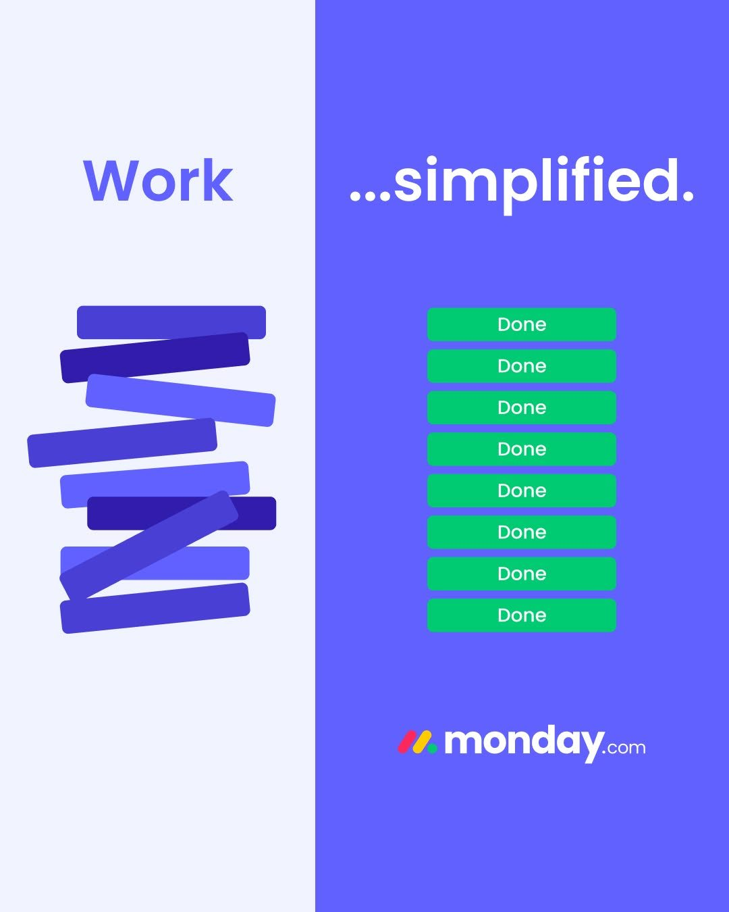
static_worksimplified
There's a reason why 225K+ customers use monday․com to efficiently manage their teams, work and processes. See why.


static_emotional_one-place
Turn strategy into predictable delivery. The monday.com AI Work Space gives you portfolio-level control over all your work.
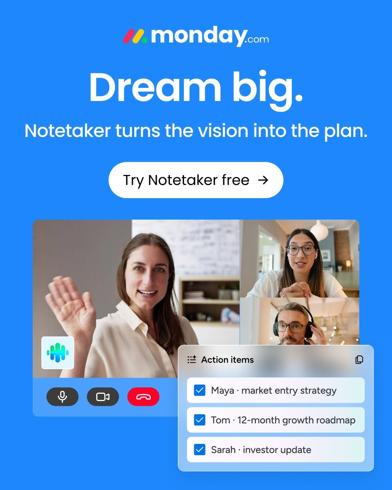

static_notetaker_dream_platform
Brainstorms are only as good as the follow-up. monday Notetaker assigns every next step to the right person

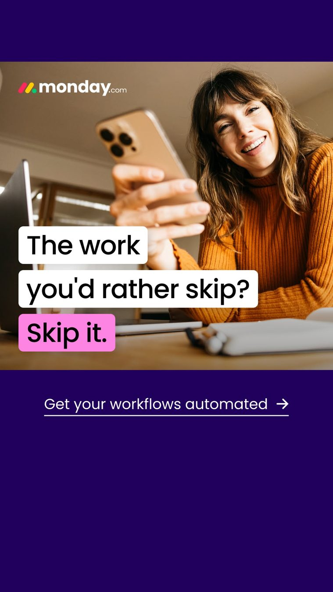
static_horizontal_emotional-skip
On monday.com, people and agents work as one team. See how The AI Work Space helps you deliver business outcomes, faster.
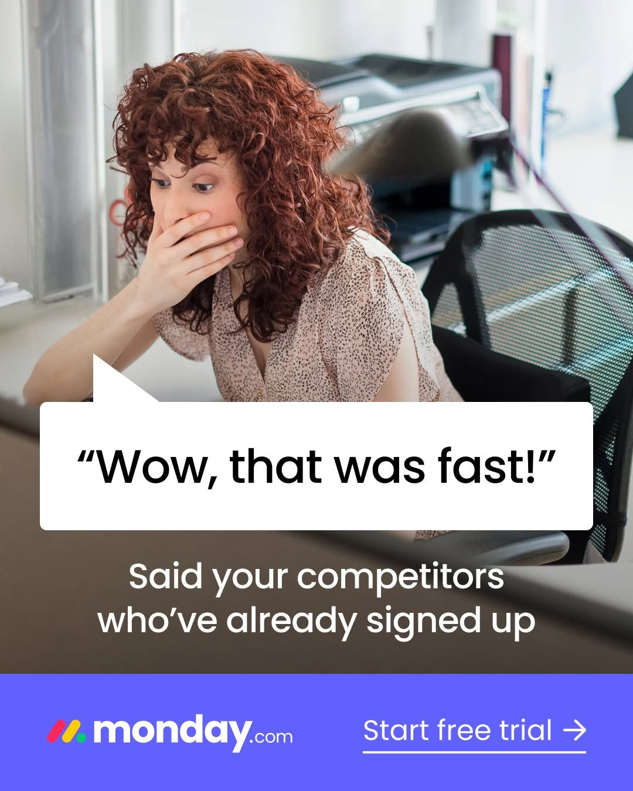

static_wow
Wish you knew your competitor’s secret to success? They might be 1 of our 250K+ customers. Give it a go and get ahead fast!
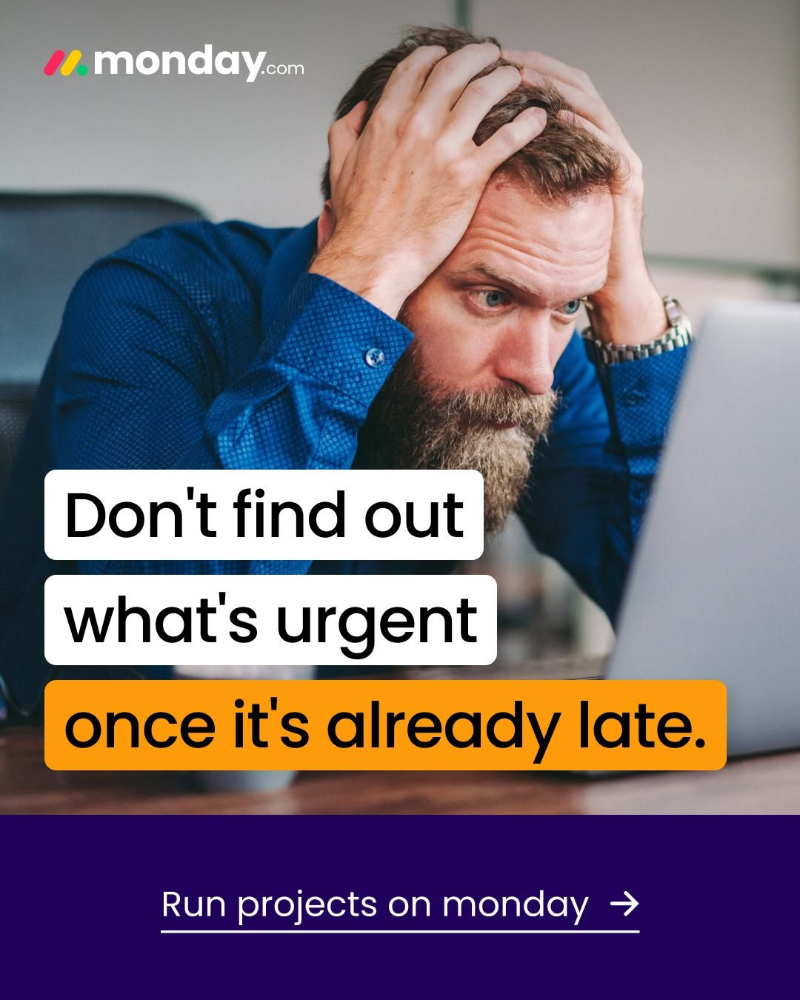
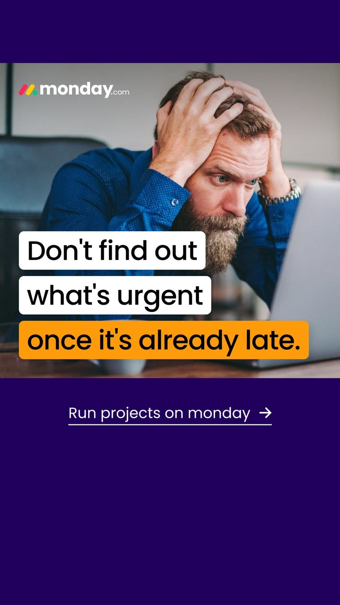
static_emotional_urgent
Connect strategy to execution across your portfolio. See how monday.com’s AI Work Space makes complex work predictable.

static_ai_lead_2
AI-first project management that handles planning, execution, monitoring and reporting so teams can focus on results.


static_notetaker_calendar-pink
Most follow-up meetings happen because nobody wrote it down. monday Notetaker turns decisions into owned tasks.
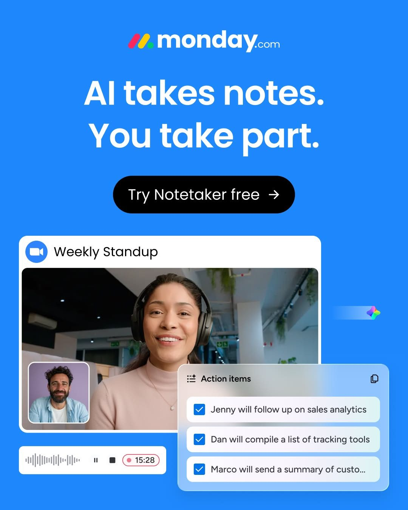
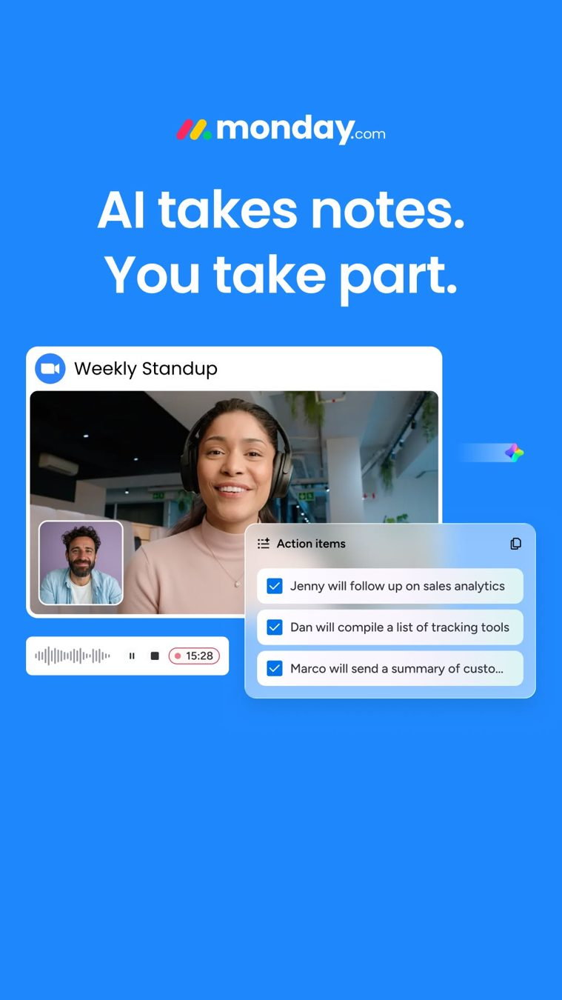
static_notetaker_screen-overview
Turn meetings into action on monday.com. Our AI Notetaker helps you focus on the conversation and keep your work moving.
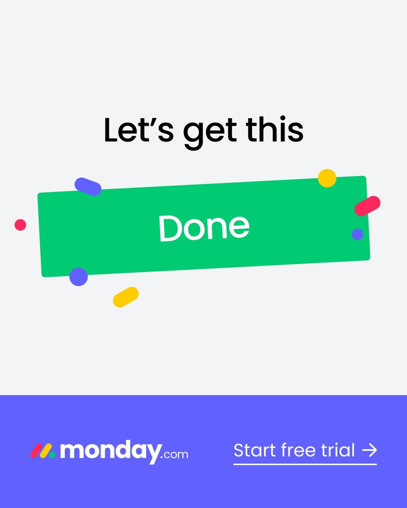

static_lets_get_this_done
We’re so close. Over 250K customers have already moved to monday.com and now it’s your turn. It’s easy, just click the link.


static_aiprompt
There's a reason why 180K+ customers use monday․com to efficiently manage their teams, work and processes. See why. — variant — There's a reason why 245K+ customers use monday․com to efficiently manage their teams, work and processes. See why.


static_Resurrect_By_now_projects_dark
All those updates, reminders, and follow-ups? They didn’t need to be yours. monday.com's AI handles the busywork directly in your workflows, so you can focus.
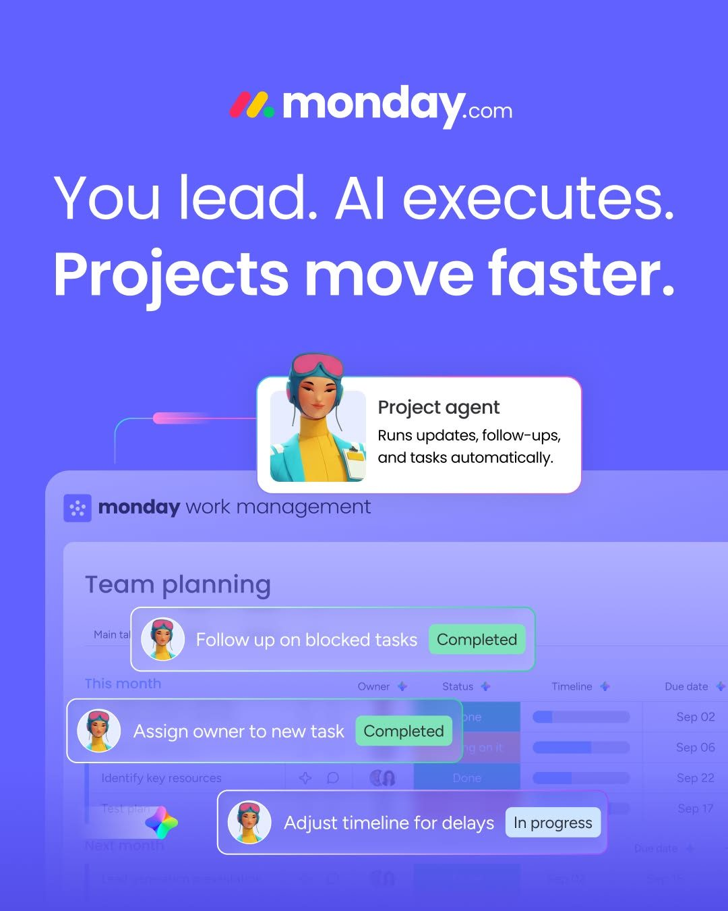
static_ai_lead_1
Deliver more projects with the same team. AI agents take care of day-to-day execution so you can focus on getting results.
GIF (≤10 sec): 7 winners
gif_notetaker_list_design
monday Notetaker transcribes your meetings and puts the action items straight onto your team's boards.
gif_gift_no-chasing
The delay you hear about on Friday started on Monday. On monday.com, ask the AI workspace and see which work is slipping.
video_wyw_marketing_short
Marketing just got better. monday sidekick is the AI that helps you plan, execute, and win campaigns, all while you focus on the big ideas.
gif_while_you_are2
Wish you knew your competitor’s secret to success? They might be 1 of our 250K+ customers. Give it a go and get ahead fast!
gif_notetaker_calendar-blue_motion
Most follow-up meetings happen because nobody wrote it down. monday Notetaker turns decisions into owned tasks.
gif_pain_stuck-approval
Delays shouldn't wait for the Friday meeting. On monday.com, the AI workspace, ask where work is stuck and see it Monday.
gif_notetaker_plan_platform
monday Notetaker turns every call into a plan with owners, statuses and due dates, inside monday.com.
US benchmark: $123,619 spend · 514 Hard SU · CPS $241 (banner campaigns alone: $235)
Winner = CPS at or below the benchmark, at least 5 Hard SU and at least 0.5% of US spend. Sorted by spend.
Static: 6 winners

missed_vacation_notetaker_static
monday Notetaker records and summarizes the meetings you can't make, so you come back to clear decisions and action items, not a pile of "what did I miss?" messages.
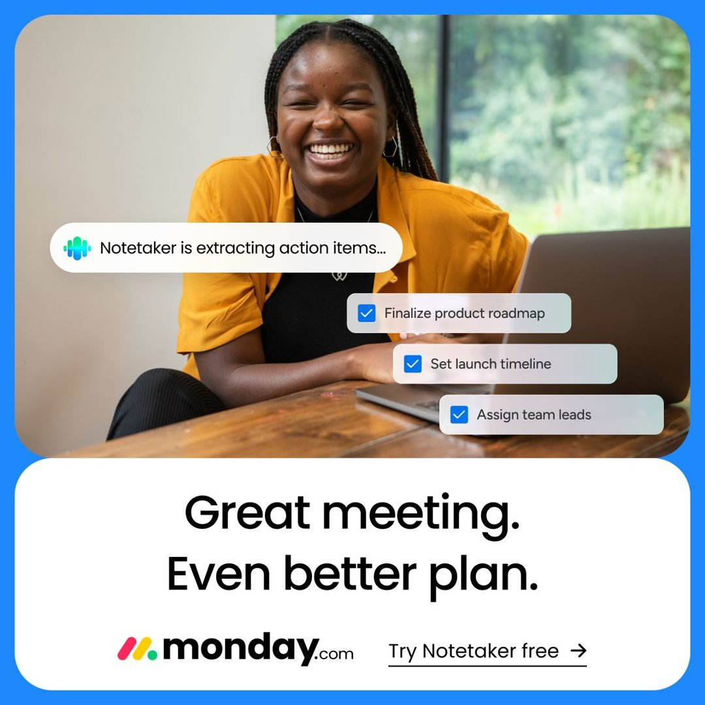
great_human_notetaker_static
monday Notetaker joins your Zoom, Teams or Google Meet calls, transcribes them and pulls out the action items, so you can stay in the conversation instead of taking notes.

agent_aimarketing_generic_emotional_signature_static
Your team is always executing, but are you seeing the full impact? monday.com's AI Work Space connects every campaign to measurable outcomes — giving marketing leaders the clarity to prove ROI and align teams.
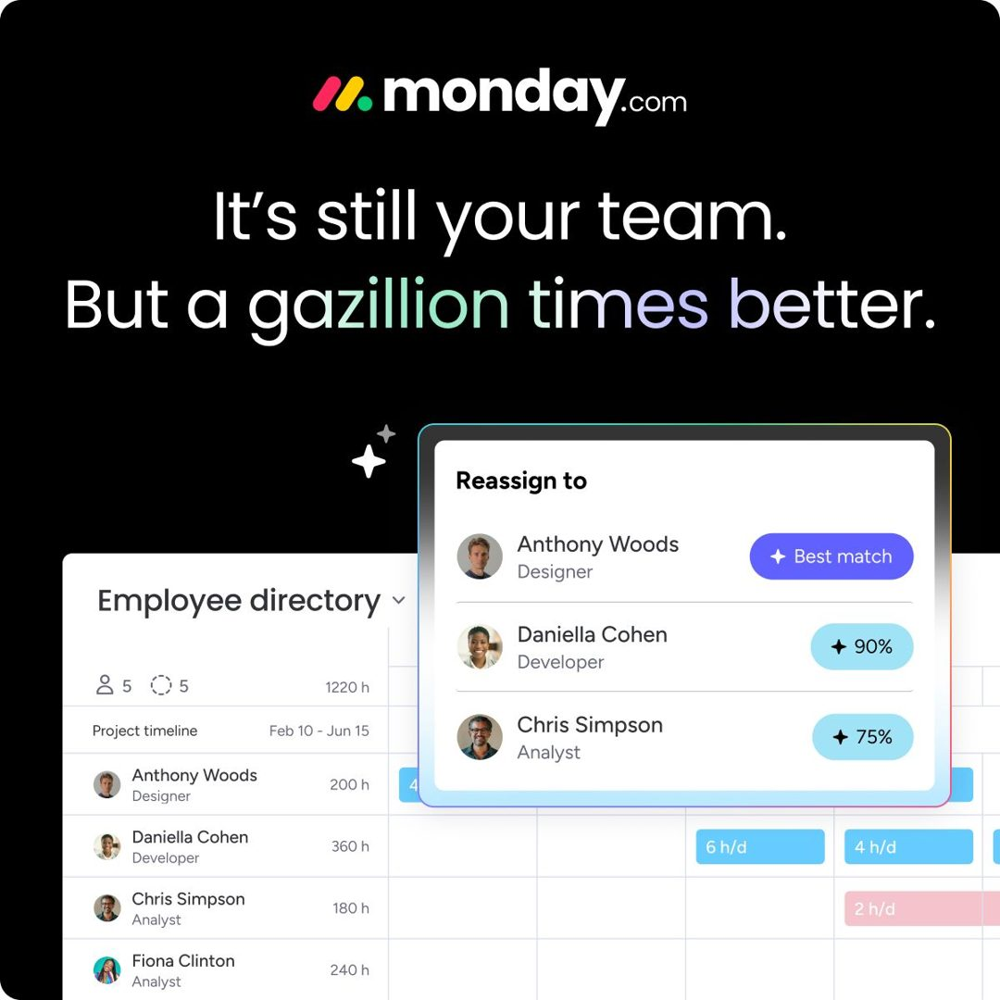
360_AI_your_team_static
Finally, a work platform your team will actually love, letting them focus on what truly matters and achieving shared goals at scale. ✅ Easy to use – Intuitive design for fast adoption. ✅ Customizable – Build workflows in minutes, no IT needed. ✅ Clear insights – Create reports and dashboards quickly. ✅ AI and automations – Boost performance and drive adoption.

calendar-blue_static_notetaker_static
Most follow-up meetings exist because nobody wrote down what was decided. monday Notetaker records, summarizes and turns decisions into owned tasks before the call even ends.
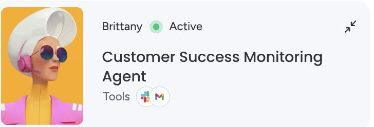
post 1290815504
Meet Brittany. My @[monday.com](urn:li:organization:2525169) AI agent that took me 20 minutes to build but saves hours of CSM time. Brittany monitors my team's accounts every month and detects when usage drops in activity, quality, or members. She then digs into what's changed and what could have driven the drop; leadership changes, layoffs, M&A, shifts in tech strategy, so I'm never going in blind. Then she identifies the right, licenced users for the CSM to discuss these changes with. She gets to work, drafting a personalized email, scoped to that person's usage, their business context, referencing real changes in their business, and a clear value pitch based off of all of the above. CSMs aren't paid to hunt for contacts or stare at a blank email draft. They're paid to build relationships and drive outcomes. Brittany has been working for the team for 4 days and has already booked 9 meetings and reignited many conversations. If you want a Brittany in your life, drop me a message and I can provide you with her instructions to bring her to life. {hashtag|\#|mondayagents}
GIF (≤10 sec): 3 winners

calendar-blue_motion_notetaker_gif
Most follow-up meetings exist because nobody wrote down what was decided. monday Notetaker records, summarizes and turns decisions into owned tasks before the call even ends.

dream_human_notetaker_gif
monday Notetaker joins your calls automatically, transcribes everything and turns decisions into tasks, so you can focus on the people in the room.
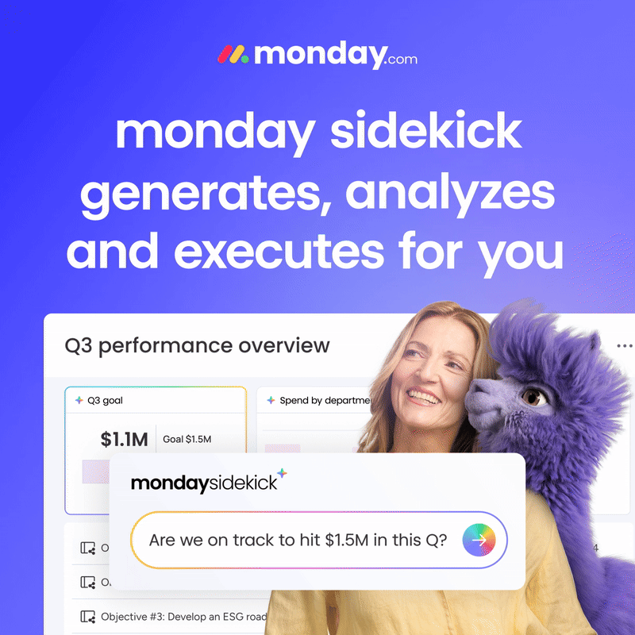
use_case_dashboard_gif
Finally, a work platform your team will actually love, letting them focus on what truly matters and achieving shared goals at scale. ✅ Easy to use – Intuitive design for fast adoption. ✅ Customizable – Build workflows in minutes, no IT needed. ✅ Clear insights – Create reports and dashboards quickly. ✅ AI and automations – Boost performance and drive adoption.
- CPS = spend ÷ SU. Every total and benchmark is Σspend ÷ ΣSU, never an average of ratios.
- GIF = gif or mp4 up to 10 sec (checked by real video length). Meta carousels are not counted as static.
- The same ad name in several ad sets/campaigns is summed into one card. Ads paused during the window are included, so the 14 days are complete.
- Meta and LinkedIn are not compared to each other: different SU events and audiences.
- Meta Work SU % is shown as context, not as a filter.
- Click any image or video to see it full size.